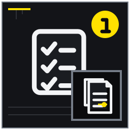
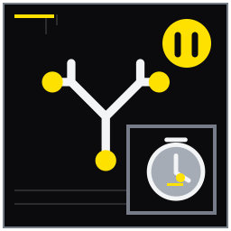

広告・申込・契約の違いを並べる
三段階で条件が変わっていないか照合する。
MITSUKE RENT GUIDE 08
契約書を法律解説で終わらせず、広告・内見回答・費用・設備・屋外管理と照合する読解記事。
契約前確認では、資料が全部そろうのを待つより、確認済み・未確認・専門家へ聞く事項を分けるほうが実務は進みます。この記事は見付の戸建て賃貸へ申し込む前後で、重要事項説明や契約条件を落ち着いて確認したい入居希望者に向け、14の論点を現地確認と相談準備の順に整理しました。契約書を法律解説で終わらせず、広告・内見回答・費用・設備・屋外管理と照合する読解記事。 結論を保証するものではなく、対象物件と契約条件に合わせて確認先を選ぶためのガイドです。
想定している検索時の疑問は、「戸建て賃貸 契約 注意点」「賃貸 特約 確認」「定期借家 LPガス」で署名前の確認項目を知りたい。 以下では広告上の一言で判断せず、記録、比較、相談境界、次の行動を章ごとに示します。
戸建て賃貸の契約確認は、契約書だけを最初から最後まで読む作業ではありません。広告、申込時の説明、見積書、重要事項説明書、契約書、設備表、配置図を同じ項目で横に並べ、内容が移る過程で条件が変わっていないかを確認します。駐車、庭、物置、設備など戸建て特有の対象範囲は、文章だけでなく図面と現況も照合してください。差異を見つけたら、どの書面が最終条件かを担当者へ尋ねます。
金銭条件は契約時に払う費用、毎月払う費用、更新等で定期的に払う費用、退去時に精算される可能性がある費用へ分けます。敷金のような預り金と、礼金や仲介手数料のように通常返還を前提としない費用を合計額だけで比べると判断を誤ります。保証料や口座手数料も発生時期を確認し、一年分と希望居住期間の両方で家計へ置いてください。
設備表は故障したときの対応を左右します。同じ室内にあるエアコンでも、一台は契約設備、もう一台は残置物ということがあります。型番と設置場所を写真で対応させ、試運転の結果、修繕窓口、費用の扱いを機器ごとに確認します。記事や一般的な慣行から貸主負担・借主負担を決めつけず、契約条項と対象設備の区分を示して質問することが大切です。
庭や外回りの管理は「借主が管理する」という一文だけでは範囲が分かりません。日常の草取り、落ち葉清掃、低木の手入れ、高木剪定、消毒、害虫、台風後の倒木などを具体例にして、担当と連絡基準を分けます。高所、薬剤、隣地への越境など危険や権利に関わる作業は、無理に日常管理へ含めません。物置や貸主保管品も配置図へ示してもらいます。
特約や禁止事項は、難しい言葉を暗記するのではなく、自分の暮らしに起こり得る場面へ置き換えます。ペット、楽器、在宅勤務、親族の長期滞在、壁への固定、アンテナ設置、長期不在などを予定しているなら、署名前に具体的に伝えてください。許可、届出、追加費用、退去時の復旧が必要かを確認し、承認を得た内容は後から確認できる方法で保存します。
署名直前には、未回答一覧をもう一度見ます。「説明を受けた」に印があっても、内容を自分の言葉で説明できない項目や、口頭回答が最終書面へ反映されていない項目は未完了です。契約方式、期間、費用、修繕、原状回復、利用範囲の順に家族で読み合わせ、必要なら行政の相談窓口や法律専門家へ確認します。署名後は契約一式と緊急連絡先を安全に保管します。
契約期間の確認では、希望する入居日だけでなく、転勤、子どもの進学、住宅購入など将来の予定も置きます。中途解約の予告、短期解約違約金、定期借家の満了通知、再契約の扱いが、予定変更へどう影響するかを時系列で見ます。将来の出来事を断定するのではなく、変化が起きた時に必要な連絡と費用を知ることが目的です。
原状回復は退去時だけの問題ではありません。入居前状態を期限内に提出し、設備故障や傷を発見した時点で記録し、無断の加工を避けることが、退去時の共同確認につながります。特約に具体的な負担が書かれている場合は、対象、金額や算定方法、説明内容を確認し、分からないまま一般的な言葉へ置き換えません。
保証会社と保険は、名称が似た費用でも役割が異なります。保証の対象、更新時期、緊急連絡先、事故時の連絡順をそれぞれの書面で確認します。家財保険に加入していることから、すべての設備故障や原状回復費用が補償されるとは限りません。証券番号と問い合わせ先を契約ファイルの索引へ記載します。
説明を受ける日は、質問票を費用、期間、設備、修繕、利用方法の順に並べます。回答が契約書、設備表、配置図のどこへ対応するかをその場で記し、持ち帰った後に家族で再確認します。修正書面が届いた場合は変更箇所だけでなく、前後の条文や金額合計も読み直し、版の日付が最新であることを確かめます。
契約書面の最終確認では、ページの差替えや訂正があった箇所を含め、製本された一式が説明時の内容と一致するかを見ます。賃料や期間だけでなく、駐車区画、庭管理、残置物、修繕窓口、特約の別紙も索引へ入れてください。署名・押印する人、連帯保証や保証会社の手続、保険の開始日が入居日と合うかも確認します。説明中に回答された事項が書面へ反映されない場合は、その理由と最終的な扱いを尋ねます。受領後はデータ化した写しと原本の保管場所を分け、更新や退去の期限をカレンダーへ登録します。契約を理解するとはすべてを暗記することではなく、疑問が起きた時に該当書面と連絡先をすぐ探せる状態にすることです。
契約条件を比較する表には、確認した事実のほかに、その条件が家族の生活へ及ぼす影響を書きます。更新や再契約、庭管理、残置物、駐車制限は、条文を読めても生活場面へ置き換えなければ判断しにくい項目です。誰が、いつ、どの費用や作業を負担するのかを一行で説明し、説明できないものは質問へ戻します。最終版の受領日を記録し、古い版を誤って参照しないよう区別してください。
配置図や設備表が契約書の別紙になっている場合は、本文と同じ契約一式として扱います。駐車番号、物置、庭、貸主保管場所が現地のどこかを確認し、鍵の貸与や利用時間など文章の条件も書き添えます。別紙に日付や物件名がない場合は対象を担当者へ確認し、署名した本文だけを保存して別紙を失うことがないよう索引へ登録します。
契約後に条件変更の案内が届いたときは、何が、いつから、なぜ変わるのか、同意や手続が必要かを確認します。賃料等の金銭、管理窓口、保険、保証、供給事業者は通知元が異なることがあります。連絡を受けた家族だけで処理せず、契約ファイルの該当項目を更新し、旧条件の適用終了日と新条件の開始日を残してください。
契約確認の記録は入居後も使います。設備故障、庭管理、長期不在、DIYなどの場面で、連絡前に該当条項と窓口を探せるよう索引を整えます。契約更新や条件変更の際は、当初書面と新しい案内を並べ、変更点を同じ方法で確認してください。
三段階で条件が変わっていないか照合する。
賃料、共益、保証更新、口座手数料等を年間化する。

日常除草、高木剪定、消毒、落ち葉の担当を読む。

転貸、長期不在、迷惑行為等の扱いを理解する。
確認の中心：三段階で条件が変わっていないか照合する。 広告、申込書、重要事項説明書、契約書を横に並べ、賃料、駐車、入居日、設備、禁止事項の行を作ります。後の書面で条件が追加・変更された箇所には印を付け、理由と承諾前の説明を確認します。
具体例：駐車二台可に車種制限が追記された例を確認する。 「駐車二台可」に車種制限が加わった場合は、自車が条件内かを寸法と配置図で確かめます。
注意：広告だけを最終契約条件とみなさない。
次の一歩：差分に付箋を貼り説明を求める。 差分が解消するまで口頭の印象で補わず、最終条件を契約書面へ反映してもらいます。
確認の中心：開始日、満了日、更新料、再契約の有無を読む。 契約開始日と満了日をカレンダーへ置き、普通借家の更新と定期借家の再契約を別の手続として読みます。更新料、通知期限、中途解約、再契約できない場合の住替え期間も確認してください。
具体例：二年普通借家と三年定期借家を比べる。 二年普通借家と三年定期借家は年数だけでなく、満了後に住み続ける仕組みが異なります。
注意：定期借家の効果や手続を自己解釈で断定しない。
次の一歩：住みたい期間を担当者へ伝える。 希望居住期間を先に伝え、説明書面と契約方式が生活計画に合うか担当者へ確認します。
確認の中心：敷金、礼金、仲介、保証、保険、鍵等を分ける。 初期費用は敷金、礼金、仲介手数料、保証料、保険、鍵交換など名目ごとに分け、支払先、支払日、返還可能性を表にします。同額の見積でも預り金と返還されない費用では意味が違います。
具体例：同額総計でも返還可能性が異なる二見積を比べる。 二つの見積は合計額だけでなく、退去後に精算される項目と契約時に確定する項目を照合します。
注意：敷金が必ず全額戻る、戻らないと決めつけない。
次の一歩：項目別の根拠資料を受け取る。 各項目の根拠書面とキャンセル時の扱いを受け取り、自己都合で敷金返還額を見込みません。
確認の中心：賃料、共益、保証更新、口座手数料等を年間化する。 毎月の賃料、共益費、保証料、口座振替手数料、駐車料を一年分へ換算し、更新月だけ発生する費用を別欄にします。支払日と引落不能時の連絡・再請求方法も家計管理に必要です。
具体例：月額保証料がある契約を一年総額へ直す。 月額保証料がある契約は賃料に加えた年間総額を算出し、初回保証料と二重に数えないようにします。
注意：小さな月額費用を見落とさない。
次の一歩：支払日と残高準備日を登録する。 支払日と残高準備日を登録し、金額変更の通知先も確認します。
確認の中心：設備、残置物、故障連絡、緊急対応を照合する。 設備表で貸主修繕の対象となる設備と、借主が利用できても修繕保証のない残置物を分けます。機器ごとに型番、動作確認日、故障時窓口、緊急対応の受付時間を保存してください。
具体例：エアコン二台のうち一台のみ設備の例を扱う。 エアコン二台のうち一台だけ残置物なら、故障時の修理、撤去、交換の可否を別々に尋ねます。
注意：故障原因を連絡前に自己判断しない。
次の一歩：型番写真と窓口を保存する。 入居時に型番写真と設備表を対応させ、家族も連絡先を確認できるようにします。
確認の中心：小修繕、消耗品、故意過失、経年変化を区別する。 小修繕、消耗品、故意過失、通常損耗、設備故障を同じ「借主負担」にまとめず、条文の具体例を質問します。修理を手配する権限と費用負担の判断は別なので、先に連絡する手順も読みます。
具体例：電球交換と給湯器故障を同じ扱いにしない。 電球交換と給湯器内部の故障では原因、専門性、設備区分が異なるため同じ扱いにしません。
注意：条文の有効性や負担を記事だけで確定しない。
次の一歩：不明な具体例を説明時に質問する。 迷う事例を二、三件用意し、重要事項説明時に条項番号と回答を記録します。
確認の中心：通常損耗、経年変化、特別損耗の考え方を確認する。 国土交通省の原状回復ガイドラインを考え方の基礎にしつつ、対象契約の特約、説明、損耗状況を合わせて読みます。通常損耗や経年変化と、借主の故意・過失等による損耗を写真で区別できる記録が重要です。
具体例：家具跡とペット傷を分けて考える。 家具跡とペット傷は発生原因や契約条件が異なるため、同じ面積でも一括して負担を決めません。
注意：実際の負担は損耗状況、契約、説明等で変わる。
次の一歩：入居時写真の提出方法を決める。 入居時写真の提出期限と受領方法を確認し、精算時に参照できる形で保存します。
確認の中心：日常除草、高木剪定、消毒、落ち葉の担当を読む。 庭管理は日常除草、落ち葉清掃、低木手入れ、高木剪定、消毒、害虫対応へ分け、担当と連絡基準を具体化します。高所や薬剤など危険な作業を曖昧な「借主管理」に含めたままにしません。
具体例：蜂の巣発見時と毎月草刈りを別対応にする。 毎月の草刈りと突然の蜂の巣では危険度と緊急性が異なるため、窓口と対応者を分けます。
注意：危険作業を曖昧な「庭管理」に含めない。
次の一歩：担当と連絡基準を書面で確認する。 庭の図面へ管理範囲を書き、費用が発生する場面も契約前に確認します。
確認の中心：契約対象、禁止区域、来客利用を明確にする。 駐車場、物置、庭、通路の契約対象を配置図へ色分けし、貸主使用部分や利用禁止部分を明示します。来客時の一時利用、車種制限、鍵の貸与、保管品への接触も確認対象です。
具体例：縦列二台と所有者倉庫の範囲を図で確認する。 縦列二台の区画と所有者倉庫が隣接する場合は、出入りに使える範囲を図面で確定します。
注意：口頭の「たぶん使える」に依存しない。
次の一歩：配置図を契約資料と一緒に保存する。 口頭の「使える」を根拠にせず、配置図を契約一式と同じ場所へ保存します。
確認の中心：許容範囲、申告、追加費用、退去時対応を把握する。 ペット、楽器、壁への固定、塗装、アンテナなど、予定する使い方を署名前に具体的に伝えます。許容される種類、時間、施工方法、追加費用、退去時の復旧を一項目ずつ確認してください。
具体例：壁への棚取付がDIY禁止に当たるか質問する。 壁棚がDIY禁止に当たるかは、固定方法と設置場所を示して担当者へ質問します。
注意：小さな変更でも無断実施を前提にしない。
次の一歩：予定する使い方を署名前に伝える。 承認を得た場合は条件をメール等で残し、承認範囲を超える変更を行いません。
確認の中心：供給事業者、料金情報、設備費用の関係を契約前に確認する。 LPガスは供給事業者、料金表の確認方法、設備費用との関係、変更通知の方法を契約前に確認します。料金は使用量や時期で変わるため、他物件の月額をそのまま予算へ入れません。
具体例：月額料金の照会方法を仲介へ聞く。 仲介担当へ最新の料金情報の提示方法を尋ね、基本料金と従量料金の条件を分けて保存します。
注意：料金は利用量や契約により変わり、記事の数値で決めない。
次の一歩：国交省資料と提示情報を照合する。 国土交通省の周知資料と提示内容を照合し、不明点は供給事業者へ確認します。
確認の中心：転貸、長期不在、迷惑行為等の扱いを理解する。 転貸、長期不在、迷惑行為、用途変更などの禁止事項と、届出・解除に関する条項を続けて読みます。一般論ではなく、親族滞在、在宅勤務、長期出張など自分に起こりそうな場面へ置き換えます。
具体例：親族が一か月滞在する場合の届出要否を質問する。 親族が一か月滞在する場合は、同居扱い、届出期限、必要情報を契約担当者へ尋ねます。
注意：解除可否を一般論だけで判断しない。
次の一歩：自分の生活で該当しそうな場面を列挙する。 解除の可否を自己判断せず、連絡が必要になる基準を条項と回答で残します。
確認の中心：権利、設備、災害、費用、契約方式の説明を記録する。 重要事項説明では権利関係、契約方式、設備、災害情報、費用を資料名とともに確認します。説明を聞いた印だけで済ませず、更新日、対象住所、契約書との一致を自分の言葉で説明できるか確かめます。
具体例：ハザード説明資料の更新日を確認する。 ハザード説明資料は区域の色だけでなく、資料の作成・更新時点と避難情報の確認先を見ます。
注意：理解できないまま「聞いた」印だけ付けない。
次の一歩：回答と根拠資料名をメモする。 未回答には回答期限を付け、根拠資料名と担当者回答をメモします。
確認の中心：契約一式、写真、鍵、保険、管理窓口をすぐ出せる状態にする。 署名後は契約書、重要事項説明書、設備表、入居時写真、保険、保証、鍵の記録を一つの索引で管理します。緊急窓口と通常窓口を分け、家族が停電時にも確認できる紙の控えを用意します。
具体例：家族も緊急連絡先を確認できるファイルを作る。 鍵本数と受領日、保険証券番号、管理窓口を表紙へまとめると緊急時に探しやすくなります。
注意：個人情報を無制限に共有しない。
次の一歩：入居前日に連絡先と鍵本数を再確認する。 入居前日に連絡先と鍵本数を再確認し、個人情報の共有範囲と保管期限も決めます。
契約前確認の準備状況を確認するため、完了・未完了だけでなく根拠資料の場所も記してください。
可能なら事前に案を受け取り、不明点を整理して説明時に確認する。 庭・草木・害虫の分担を具体化するの確認結果を添えると、一般論と対象物件の事情を分けて相談できます。分からない欄を無理に埋める必要はありません。
更新と再契約は異なる。契約内容と法定手続を個別に確認する。 LPガス等の料金情報を確認するの確認結果を添えると、一般論と対象物件の事情を分けて相談できます。分からない欄を無理に埋める必要はありません。
内容、説明、法令、具体的事情で判断が異なり、一律に断定できない。 署名後の保管と連絡先を整えるの確認結果を添えると、一般論と対象物件の事情を分けて相談できます。分からない欄を無理に埋める必要はありません。
国交省の周知資料を参照し、契約前に提示される情報や確認先を仲介へ尋ねる。 初期費用は名目と返還条件で見るの確認結果を添えると、一般論と対象物件の事情を分けて相談できます。分からない欄を無理に埋める必要はありません。
まず宅建業者へ根拠と具体例を尋ね、紛争性や法的判断があれば適切な専門家・相談窓口へ。 借主負担修繕の条項を確認するの確認結果を添えると、一般論と対象物件の事情を分けて相談できます。分からない欄を無理に埋める必要はありません。
制度や手続は更新されるため、公開元の最新情報と対象範囲を確認してください。リンク先の説明は個別物件への判断を代替しません。
本記事は2026年8月時点の一般的な情報整理と相談準備を目的としています。対象物件の安全性、適法性、契約条件、税務上の取扱い、修繕の必要性を診断・保証するものではありません。法務は弁護士・司法書士、税務は税務署・税理士、建物の安全や工事は建築士・施工業者、行政制度は担当窓口へ個別に確認してください。富士ヶ丘サービス株式会社は宅地建物取引業者として、戸建て賃貸の現況整理、募集条件、管理方法、売却を含む選択肢の相談を承ります。